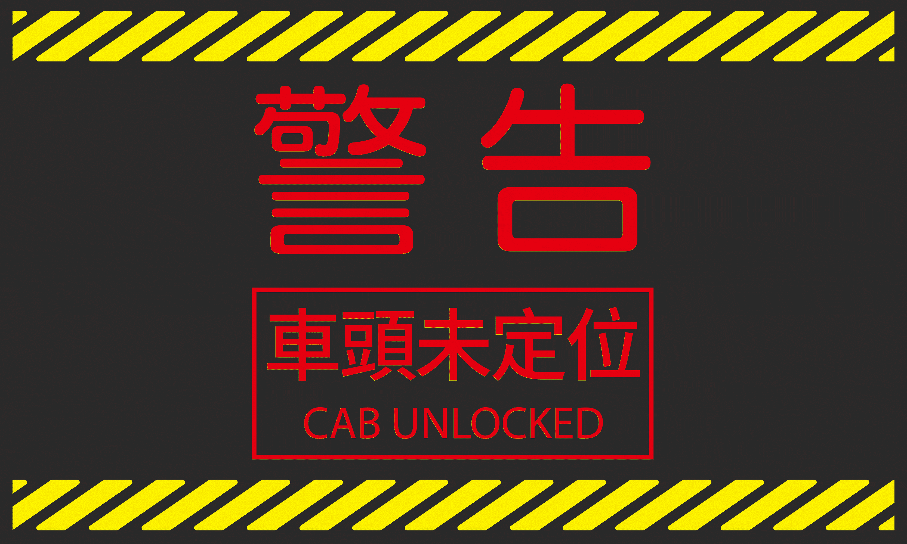

消防車體螢幕
掌控消防車設備，一鍵操作燈具、灑水設備與捲門，現場更安全高效
#UIUX設計

專案背景
Background
公司主要業務為消防車體打造，需要為消防車內的操作螢幕設計一套控制介面。該螢幕是車內的中控核心，必須能夠即時控制與監測各種設備，支援消防人員在救援任務中的快速操作。
設計目標
1. 整合多種功能控制（燈具、灑水、捲門、PTO、擴音器、水箱容量監測）。
2. 提供清晰即時的操作回饋，避免錯誤操作。
3. 讓消防人員能在高壓環境下快速理解狀態，提升操作效率與安全性。
2. 提供清晰即時的操作回饋，避免錯誤操作。
3. 讓消防人員能在高壓環境下快速理解狀態，提升操作效率與安全性。
功能需求
Requirements
為了支援消防員在不同出勤情境下的操作需求，系統功能被劃分為四大任務面向：
照明支援
提供側照燈、排燈、室內燈與爆閃燈控制，並可切換閃爍模式，確保消防員在夜間或狹窄場域中仍具備清晰視野，同時提醒周邊人車注意。
消防作業
整合灑水操作與即時水箱容量顯示，協助消防員在任務中快速掌握剩餘水量，避免因判斷失誤造成作業中斷。
設備管理
涵蓋捲門開啟、車頭傾倒與 PTO 狀態監控，讓消防員能迅速取用裝備，並確保泵浦與動力系統的正確連結，維持設備運行穩定。
溝通與警示
內建擴音器音量與模式切換，提升現場的溝通效率；同時加入安全警示機制，若車頭未正確定位，系統將即時彈出警示提醒，降低誤操作風險。
透過這四大面向的功能整合，整套系統能在高壓救援環境下同時兼顧效率、直觀與安全，成為消防車輛操作的可靠中樞。
設計挑戰
Challenges
挑戰1：功能繁多且專業，如何在有限螢幕上有效整合？
→ 依任務類別進行分區（燈具控制 / 車輛操作 / 系統監控 / 音效控制），降低資訊密度。
→ 採用模組化介面，將同類操作放在同一區域（例如：所有燈具開關集中在燈具區塊）。
→ 使用圖示化設計（燈具圖示、捲門圖示、水箱量條），讓使用者透過圖像快速辨識功能。
→ 採用模組化介面，將同類操作放在同一區域（例如：所有燈具開關集中在燈具區塊）。
→ 使用圖示化設計（燈具圖示、捲門圖示、水箱量條），讓使用者透過圖像快速辨識功能。
挑戰2：操作環境緊急，必須保證消防人員能快速判斷狀態
→ 採用高對比配色（紅/黃/橘）顯示設備狀態，一眼就能辨識是否啟動。
→ 將關鍵狀態資訊固定在主要視覺區域（例如水箱剩餘量、PTO 狀態持續可見）。
→ 使用大尺寸按鈕與足夠間距，避免誤觸並加快操作速度。
→ 強調即時更新，讓每個操作立即反映在介面上。
→ 將關鍵狀態資訊固定在主要視覺區域（例如水箱剩餘量、PTO 狀態持續可見）。
→ 使用大尺寸按鈕與足夠間距，避免誤觸並加快操作速度。
→ 強調即時更新，讓每個操作立即反映在介面上。
挑戰3：需要避免「只按了按鈕卻不確定是否成功」的情況
→ 在介面中加入消防車模型可視化，操作後即時顯示效果（例如燈具亮起、捲門拉起）。
→ 若操作有風險（例如車頭未定位完成），即時跳出 警示訊息，避免誤操作。
→ 若操作有風險（例如車頭未定位完成），即時跳出 警示訊息，避免誤操作。
成果亮點
Key Outcomes
直觀互動設計
以「消防車模型」為核心，將複雜操作轉化為直觀的互動

即時狀態回饋
提供即時狀態顯示（如水量、燈具閃爍、PTO 狀態）
安全防護機制
加入車頭未定位警示提醒，降低失誤風險

高壓環境支援
提升操作效率，幫助消防人員在高壓情境下快速判斷與行動